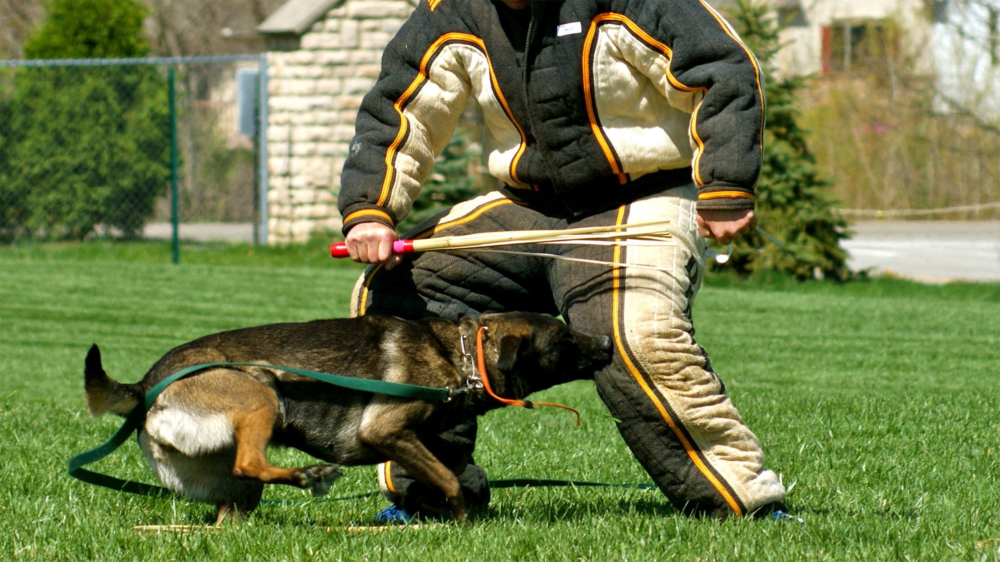
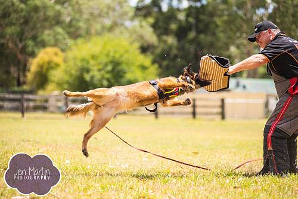
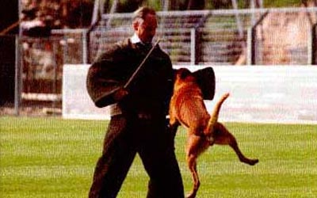

Agitation Training for Working Dogs
Agitation Training for Working Dogs: Building Controlled Aggression
Agitation training (pre-bite or drive-building) is a structured process used in police,
military, and protection sports (like IGP/Schutzhund) to develop a dog's controlled aggression, confidence,
and bite commitment. The goal is not to create an uncontrollable aggressive dog, but one that is highly
driven, focused, and obeys instantly — even when aroused.
Here are key stages and methods:
1. Foundation: Selecting the Right Dog & Building Drive
Only dogs with strong natural prey and fight drive are selected.
- Drive = genetics + early environment
- Early play, teasing, and tug games
- Building intense desire for the "prey object" (sleeve, suit, toy)
- Creating positive emotional association with conflict
2. Agitation Phase – Teasing & Frustration Building
A trained decoy/helper in full protective gear provokes the dog — yelling, moving
erratically, threatening gestures — while the dog is leashed or held back. This builds frustration,
barking, lunging, and intense focus. The dog learns that aggression is rewarded when finally permitted.
- Yelling, erratic movements, threatening gestures
- Dog is usually leashed or held back → builds intense frustration
- Dog learns: aggression is rewarded when finally permitted
Here are examples of agitation training setups with a decoy teasing the dog to build intensity:

3. Introduction to Bite Equipment
Training progresses to bite sleeves (padded arm protection) or bite suits. The decoy offers the sleeve as
the target. The dog is encouraged to bite hard and hold (full-mouth grip, no shaking). The decoy fights
back mildly at first, rewarding the dog's commitment.
Bite sleeves teach proper mechanics: deep, firm, pushing grip (counter-pressure) rather than pulling
away.
- Bite sleeves – teaches deep, firm, pushing grip
- Decoy offers sleeve → dog encouraged to bite hard and hold
- Mild resistance from decoy rewards strong commitment
- Focus on full-mouth, counter-pressure bite (not shaking/pulling)
Real-world examples of dogs engaging bite sleeves during training:


4. Advanced Progression
Training becomes more realistic and challenging:
- Full bite suits → body targeting
- Hidden sleeves (no visual cue)
- Muzzle agitation (building drive without bite)
- Scenario work: fleeing suspect, armed decoy, crowd noise, multiple people
- Dog learns to target the man, not the equipment
Core Training Principles
- Controlled aggression – instant OUT release is
non-negotiable
- Praise, toys, tug & decoy "defeat" are primary rewards
- Heavy emphasis on safety – thick padding, experienced decoys
- Aggression is channeled into precise, handler-directed action
Warning: This type of training should only be performed by
experienced professionals with proper equipment and safety protocols.